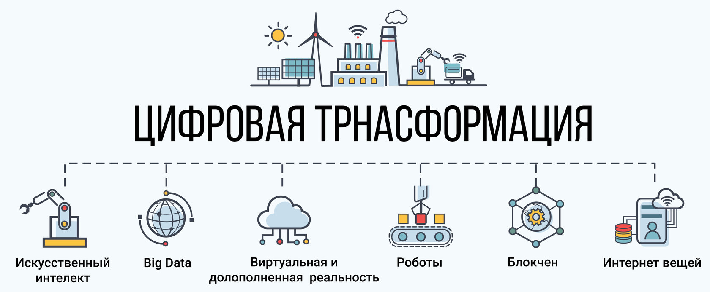

Цифровая трансформация:
Сущность и основы понятия
Суть и содержание понятия «цифровая трансформация»
Цифровая трансформация
Интеллектуальные помощники и специальные программы берут часть принятия решений
Технология блокчейн и смартконтракты
Обработка больших данных, машинное обучение
Полностью «цифровая» организация
Интернет вещей
Определение цифровой трансформации
Цифровая трансформация предполагает внедрение цифровых технологий в различные сферы жизни, прежде всего в бизнес, деятельность организаций, управление ей.
- Цифровая трансформация - это перестройка бизнеса на основе использования цифровых моделей, методов управления, продукции (работ, услуг)
- Цифровая трансформация - это качественные изменения в бизнес-процессах или способах осуществления экономической деятельности (бизнес-моделях) в результате внедрения цифровых технологий, приводящие к значительным социально-экономическим эффектам.
 Сегодня цифровая трансформация является центральным элементом и важнейшим условием для достижения операционной эффективности и внедрения инноваций во всей организации. Это позволяет ускорить рост компании, увеличить эффективность ее деятельности и более оперативно решать возникающие проблемы.
Сегодня цифровая трансформация является центральным элементом и важнейшим условием для достижения операционной эффективности и внедрения инноваций во всей организации. Это позволяет ускорить рост компании, увеличить эффективность ее деятельности и более оперативно решать возникающие проблемы.
Применяется для:
Бизнеса
Обученя
Отраслей (сфер деятельности)
Управления организацией
Особенности цифровой траснформации:
Особенности цифровой траснформации:
- Экспоненциальный темп развития
- Появление «полностью цифрового» бизнеса
- Трансформация затрагивает все сферы жизни, производства
- Изменение рынка труда
- Создание новых бизнес-моделей
Промышленные революции
Промышленная революция - кардинальное изменения производства и общества в результате развития технологий. Выражается в:
\
Высвобождение рабочей силы
Замена человеческого труда машинами
Увеличение производительности труда
Изменение общества и его структуры
Повышение уровня жизни
Изменение структуры потребления
4 промышленные революции
| I промышленная революция |
II промышленная революция |
III промышленная революция |
IV промышленная революция |
| 1778
Изобретение Джеймсом Уаттом парового двигателя.
Машины впервые заменили человека
Строительство заводов и фабрик |
Конец 19-начало 20 века.
Электрификация, автомобиль, лампа накаливания. Первый конвейер Форда
Строительство железных дорог, возникновение новых отраслей производства |
Около 1960.
Создание ЭВМ, затем персональных компьютеров. Автоматизация производства |
Интернет, цифровизация
Сквозные технологии ЦТ
Появление цифровой экономики
Активный рост продаж услуг и «цифровой» продукции
Цифровая трансформация |

Предпосылки для возникновения цифровой трансформации
- Развитие доступного Интернета
- Повышение мощности компьютеров
- Наличие у многих людей гаджетов, которые позволяют им участвовать в цифровой экономике
- Возникновение цифрового сектора в экономике, «цифровой» экономи-ки
- Возникновение и распространение «сквозных» технологий, обеспечи-вающих возникновение ЦТ
- Уровень автоматизации и цифровизации производства, позволяющий использовать цифровую трансформацию
Сквозные технологии цифровой трансформации
нейротехнологии и искусственный интеллект
"большие данные" (big data)
системы распределенного реестра (блокчейн)
квантовые технологии
новые производственные технологии
промышленный интернет
компоненты робототехники и сенсорика
технологии беспроводной связи (в частности, 5G)
технологии виртуальной и дополненной реальности (VR и AR)
Цифровизация, цифровая экономика и цифровая трансформация
Цифровой – сущность (технология, процесс и пр.), в которой выполнение процесса (деятельности и т.п.) основано исключительно на использовании информационно-телекоммуникационных технологий (ИКТ) и оборудования, и при этом без использования человека.
- Цифровизация – это внедрение цифровых технологий в разные сферы жизни для повышения её качества и развития экономики.
- Цифровизация - деятельность, позволяющая во много раз увеличить производительность разных процессов за счет использования информации, оцифрованной, объединенной в единую систему
Автоматизация - Машинное производство, осуществляемое по программе или под контролем компьютера и не требующее обычно участия человека.
Этапы:
- Автоматизация
- Информатизация
- Цифровизация
- Цифровая трансформация
| Критерий |
Автоматизация |
Информатизация |
Цифровизация |
Цифровая трансформация |
| Объект |
Подразделение, организация |
Организация, сфера деятельности |
Организация, сфера деятельности |
Организация, сфера деятельности |
| Широта охвата |
Операция
Бизнес-процесс
Группа бизнес-процессов |
Бизнес-процесс
Группа бизнес-процессов |
Бизнес-процесс
Группа бизнес-процессов |
Группа сквозных бизнес-процессов |
| Цель внедрения |
Снижение трудоемкости выполнения бизнес-процессов |
Снижение трудоёмкости выполнения бизнес-процессов
Комплексное эффективное управление организацией |
Снижение трудоёмкости выполнения бизнес-процессов
Повышение скорости и качества при-нятия бизнес-решений |
Кардинальная перестройка организации – бизнес-процессов, сотрудников, культуры, экосистемы и пр.
Разработка новых «цифровых» продуктов/моделей
Получение принципиально новых бизнес-возможностей |